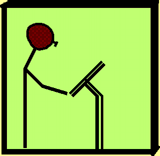
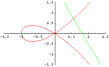
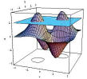
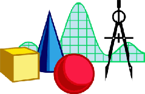
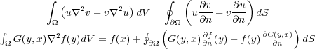

\(f(x)=\sum_{n=0}^\infty \frac{f^{(n)}(a)}{n!} (x-a)^n\)
Exponential function:
\(e^x = 1 + x + \frac{x^2}{2!} + \frac{x^3}{3!} + \dots\)
Sine Function: \(\sin(x) = x - \frac{x^3}{3!} + \frac{x^5}{5!} - \frac{x^7}{7!} + \dots\)
Cosine Function: \(\cos(x) = 1 - \frac{x^2}{2!} + \frac{x^4}{4!} - \frac{x^6}{6!} + \dots
\)
MathML
with \(\LaTeX\) input
Zouleaf Spectrum of multiscale: simulations tool online
✓ [MathJax Html]
✓ [Python]
   |
Green's
formulas, which I call fundamental theorem in higher dimensions  To know the way ahead, ask those coming back. The journey is the reward. (Taoism) There is no difference between living and learning. (John Holt) |
| Class schedule by chapters/sections (tentative) | |||
|---|---|---|---|
| Transcendental Functions | 7.1 - 7.8 | ||
| Techniques of Integration | 8.1 - 8.8 | ||
| Exam 1 | Chap.7 and part of Chap.8 | ||
| Infinite Sequences and Series | 10.1 - 10.10* | ||
| Exam 2 | part of Chap.8 and Chap.10 | ||
| Conic Sections and Polar Coordinates | 11.1 - 11.7* | ||
| Cumulative Final Exam | Chapters 7,8,10, 11 | ||
| Review | Exam | Date |
|---|---|---|
| Review Exam I | Exam I | |
| Review Exam II | Exam II | |
| Review Exam III | Exam III | |
| Review Final | Final Exam |
Riemann zeta function
\(\zeta(s)=1+\frac{1}{2^s}+\frac{1}{3^s}+\cdots+\frac{1}{n^s}+\cdots \)
Euler (1737):
{\Large \(
\sum_{n=1}^\infty\frac{1}{n^s}=\prod_{p\; prime}\frac{1}{1-p^{-s}} \)
}
{kind=link}